This document, Accessibility Requirements for People with Low Vision, describes what people with low vision need for electronic content, tools, and technologies to be accessible. It includes an overview of low vision and describes specific user needs. Additional information may be available from Accessibility for People with Low Vision.
@@ change table of contents links that have "rewrap" to "reflow" in the url
Introduction
About this Draft: There are several open issues that are not yet included in this draft. Some images and image descriptions will be revised. This draft is not yet copy edited or polished.
This document, Accessibility Requirements for People with Low Vision, describes what people with low vision need for electronic content, tools, and technologies to be accessible. It includes an overview of low vision and describes specific user needs. It does not set priorities on issues.
User needs can be met at several levels, including hardware, operating systems, user agents (such as web browsers), extensions, plug-ins, assistive technologies, and content. This document does not specify responsibility for meeting user needs, and it does not set technical requirements.
This document is intended to provide the background for developing guidance on making web content, tools, and technologies accessible to people with low vision.
Additional information:
Accessibility for People with Low Vision links to details on visual conditions and their impact on web use, and links to related W3C work that is planned for the future
References provides sources for the information in this document
Overview of Low Vision
This section provides basic information about low vision related to information and communication technologies. It is not intended to provide formal definitions of terms. It is intended to provide background information for understanding user experiences and user needs.
Scope of Low Vision
“Low vision” refers to visual impairments other than blindness. Other terms, such as “partially sighted” and “sight impaired”, are used in different contexts. Some governments and organizations such as the World Health Organization (WHO) define categories of low vision based on specific levels of visual acuity and field of vision. Visual acuity is the clarity or sharpness of vision. Field of vision is the area a person can see when their eyes are fixed in one position.
In many contexts, low vision only includes impairments that are not corrected with regular glasses, contact lenses, medicine, or surgery. For example, an inability to focus on objects close to the viewer but that can be overcome with reading glasses is not considered low vision in some disability rights contexts. In these contexts, low vision is often defined as visual impairment that interferes with a person’s ability to perform everyday activities.
In some contexts, such as social program benefits, people are classified as either having low vision or being “legally blind” (“severely sight impaired” or other terms). Many people who are legally blind have some usable vision, and can read some text when it is displayed optimally for them.
In considering user needs, this document uses a broad scope of low vision to include all visual impairments except significant blindness — including impairments from aging, “color blindness”, and impairments that are often categorized as legally blind yet people have sufficient vision to see information in some situations. This document does not include all issues that are also relevant for people who are totally blind. It does include several issues that overlap with the needs of some people with cognitive disabilities.
Incidence
In a fact sheet on visual impairment and blindness [[WHO-VI]] the World Health Organization (WHO) estimates that of the 285 million people worldwide who are visually impaired, 39 million are blind and 246 have low vision, that is, 14% are blind and 86% have low vision.
Cause and Progression of Low Vision
Most low vision is caused by eye diseases and health conditions such as cataracts, glaucoma, and diabetes. These are more common among older people. Some low vision is congenital (from birth) and some is caused by injuries.
Low vision encompasses a wide and variable range of issues across people, and even a single individual may experience multiple separate issues. Many eye diseases cause progressively worsening vision, and it is not uncommon for a person’s vision to deteriorate from good vision to blindness over several years. Some causes of low vision can be improved through surgery or medication, and it is not uncommon for someone to have deteriorating vision over several months, and then experience improved vision after treatment.
Starting around age 40, most people have declining vision that is not caused by disease, including decreasing ability to focus on text that is close, decreasing color perception, decreasing contrast sensitivity, and more. Some of this is “correctable” with glasses or more lighting, and some is not. Many people with decreased vision due to aging do not consider themselves as having a disability.
Visual Impairments
This section briefly introduces five types of visual impairment that impact digital information, not including total blindness:
Visual acuity (clarity)
Light and glare sensitivity
Contrast sensitivity
Field of vision
Color vision
Visual Acuity (Clarity)
Visual acuity is the clarity or sharpness of vision. It relates to the finest detail a person can perceive. It is generally dependent on the functioning of the retina part of the eye and of the interpretation of the brain. Measurement of distance visual acuity is based on a standard of 20/20 (6/6 in metric).
Some low visual acuity can be corrected with glasses, contact lenses, or surgery – and some cannot. Therefore, some people will not see small text or fine details at all.
User needs related to visual acuity (clarity) are addressed in the following sections:
3.3 Perceiving - text size, font, style, capitalization, size of all elements
3.4 Spacing for Reading - line spacing, letter spacing, word spacing, justification, margins and borders, spacing between elements
Many people with low vision have extreme sensitivity to light (called photophobia). Bright light makes it difficult or impossible to see, and causes eye pain and headaches. For some people, the normal brightness of a computer screen with a light background is not readable and painful. They need to change the background to a darker color. Glare sensitivity is common with age-related vision changes and cataracts.
User needs related to light sensitivity are addressed in the following section:
Contrast sensitivity is the ability to detect differences in brightness, for example, to discern text from its background. A common accessibility barrier for people with low contrast sensitivity is gray text on a light background.
Contrast is based on brightness. Colors that look very different (for example, red, blue, green) can have similar brightness, and not provide sufficient contrast. Tools are available to determine the contrast ratio between colors.
User needs related to contrast sensitivity are addressed in the following section:
Field of vision, or visual field, is the entire area that can be seen when the eye is directed forward, including what is seen with peripheral vision. Some eye and neurological conditions cause field loss, where people have a smaller or obscured field of vision. For example, significant peripheral field loss, sometimes called "tunnel vision", is somewhat like looking through a drinking straw.
Types of visual field loss can be grouped as follows:
Peripheral field loss: People only see in the central portion of their visual field.
Central field loss: Vision is reduced or absent in the middle of people’s vision.
Other field loss: People have scattered patches of obscured vision, have a ring of field loss, have field loss in the left or right part of their vision, or other field loss.
Simulated examples of visual field loss:
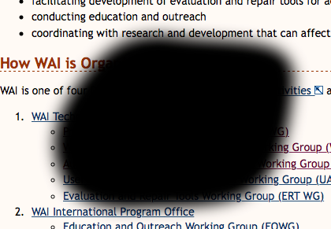
Example of central field loss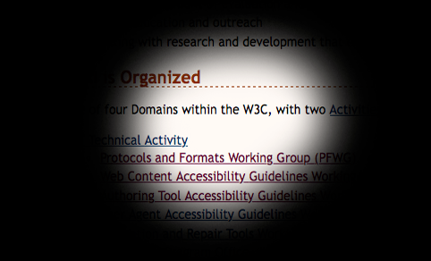
Example of peripheral field loss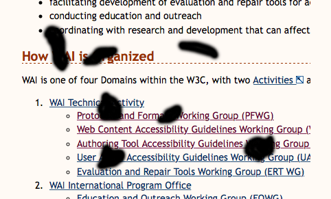
Example of other field loss
User needs related to field of vision are addressed in the following sections:
3.2 Tracking - reflow for one direction scrolling, reflow to single column, flexible text areas, line length, justification, hyphenation
Some people do not see certain colors well or at all. Color vision deficiencies are commonly called “color blindness”, even though most people who are color blind can see many colors. It is rare that a person cannot see any color at all. Globally, approximately 1 in 12 men (8%) and 1 in 200 women have color vision deficiencies. Color vision deficiencies are not classified as “low vision” or disabilities in many contexts.@@Note: the images below do not meet WCAG 1.4.11, see the Rationale.
Simulated examples of color blindness:
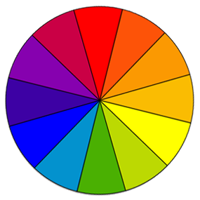
Full color perception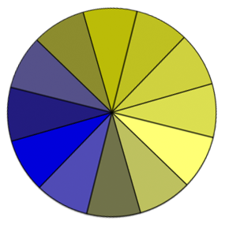
Red-green color blindness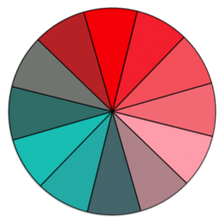
Blue-yellow color blindnessNo color perception (rare)
User needs related to color blindness are addressed in the following section:
Most people with low vision have multiple issues related to their visual impairment. For example, people with macular degeneration usually develop central field loss (“blind spots”), poor visual acuity, low contrast sensitivity, and high light sensitivity. Other factors — such as inflammation, medication, fatigue, environment, and task — influence a person’s functional vision in a given situation.
Fatigue is a significant issue for many people with low vision, particularly when they read text that is not displayed in an optimum way for their visual situation. Generally, the more a person needs to strain to read, the worse their visual fatigue will become. Some people can read for only a short time and then they need a break.
Physical environmental factors include:
Clarity of the device, for example, dots-per-inch (dpi)
Brightness of the device
Lighting
Glare
Distance and angle
Movement, for example, reading on a train
Sometimes people have control over environmental factors, for example, they can change the lighting in the room, set the brightness of the device, move to a shaded location, or change the angle of the display. Sometimes people have little or no control over the environment, for example, when using a public kiosk.
Some low vision accessibility issues are directly related to functional vision and some are related to adaptations for visual impairments. For example, when a person with low visual acuity (and full field of vision) uses zoom or magnification, they have some similar issues as people with peripheral field loss — as considerable information may be moved outside of their field of vision as a result of their solution to reduced visual acuity.
User Needs
User needs vary widely across people who have low vision, and one user’s needs may conflict with another user’s needs. For example, an older person might need high contrast but that might be unreadable to a person with light sensitivity; a person with good visual acuity (clarity) and tunnel vision might need to make the text size small so they can see more words at a time to read better, whereas most people with low visual acuity need large text.
It is not uncommon for one person’s needs to be different from day-to-day or even throughout one day. For example, when they are more fatigued, they might need larger text or a different background color.
There is a difference between being able to see individual letters, being able to effectively read sentences, and being able to read for a long period of time. A person may be able to distinguish individual letters in a given text display (font, text size, etc.), but not be able to effectively read multiple lines of text (blocks of text) in that same display, because the effort required to perceive the letters prevents the person from being able to understand the text well. Similarly, a person may be able to read a given text display for a short time, but it causes fatigue; the user needs different text display (larger text, more spacing, etc.) in order to read long enough to complete their task.
Users may need different text display for different tasks — such as reading only a few words by themselves, versus reading a couple paragraphs or reading long documents. For example, a user may be able to recognize a known street name on a map in small text with moderate contrast, yet for reading an article, the user needs larger font and more contrast.
Thus users need to be able to adjust information display to meet their needs. An individual's optimum display for readability often requires very specific adaptations. For example, a person with high light sensitivity and low contrast sensitivity needs to set background and text colors that are not bright and that provide sufficient contrast for them to discern the text.
The characteristics of text that make it more or less legible and readable are highly inter-related; that is, one characteristic is dependent on other characteristics. For example, a person with low contrast sensitivity might not be able to read small text with a contrast ratio of 5:1, but can read text at that ratio when then text is much larger; similarly, with some fonts a person does not need to increase the letter spacing, but with other fonts they do.
The user needs below are grouped by categories, yet some aspects relate to different categories. This section explains user needs for:
Additional User Needs will be added related to contrast and image accessibility.
Each section below briefly explains the issue and the user experience, and then states a specific user need after "User Need - ". User Needs that say “Users can...” indicate that users can change a setting.
Brightness and Color
Color is combination of hue, saturation, and brighness. Hue is the tone of the color, think 'red', 'green', etc. Saturation is the intensity of tone, think shades from grey to pure color. Brightness (also known as luminance) is the perceived amount of light coming from an object. The brighness scale is from 0% light (black) to 100% light (white). [see Colors as Hue, Saturation and Brightness illustrated explanation]. This document uses "brightness" for simplicity.
Brightness Overall
Bright light from a screen or other sources prevents some people with low vision (including those with photophobia and with reading disabilities such as dyslexia) from reading and causes pain for some people. Some people turn down the brightness of their screen or use an overlay. For other people, it is easier to read with a bright screen, and they sometimes increase the brightness, especially on mobile devices. Brightness adjustment is a funtion of the device hardware. That is, the monitor, the laptop, the tablet, or other mobile devices. All of these devices have brightness and contrast settings that are separate from Text Contrast below. Users may need to adjust both the device, specific operating system, and application setting to achive optimal viewing.
User Need - Brightness:
Users can set the overall brightness of a display.
As mentioned in the Light Sensitivity section, some people need low brightness, especially for backgrounds. Some people who need low brightness for backgrounds also need low brightness overall and thus need low brightness text.
Other people need high contrast between text and background, including many older people who lose contrast sensitivity from ageing. Some read better with dark text on light background.
For some people, common color combinations or colors from a limited color palette work fine, for example, black text on white background or the inverse with white text on black background. Other people need to select more specific background and text colors. For example, people who need low brightness overall, need to select the specific background and text colors that provide sufficient contrast for them yet not too high brightness. Readable and optimal color combinations differs vastly among individuals and can even vary for one individual depending on conditions such as fatigue and lighting.
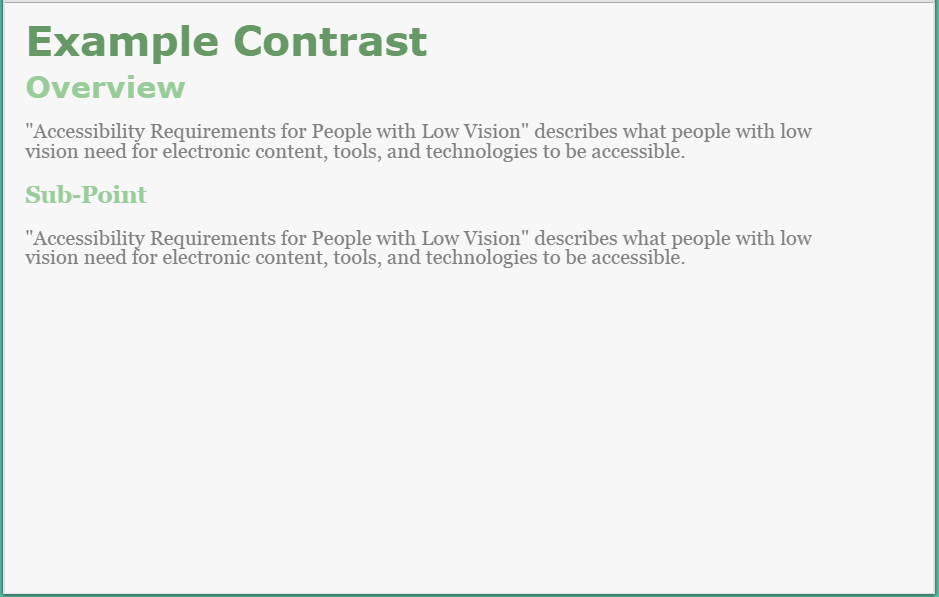
Web page with author-defined colors with low contrast - light background, gray text, light green headingsWeb page with user style with medium contrast - brown background, tan text, headings of different dull colors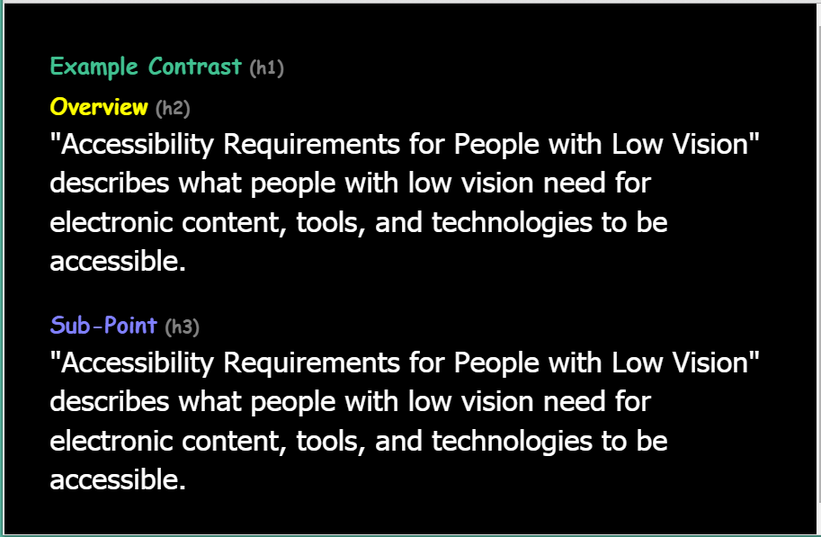
Web page with user style with high contrast - black background, white text, headings of different bright colors
User Need - Contrast:
Users can set the background color and the text color from the full color spectrum.
Color is an integral part of web design and interactions. However, some people cannot distinguish colors (see Section 2.5.4 above). People with color vision limitations may miss important information that is only conveyed by color. Examples include: a map with designated parking areas in green, or a form with required items marked in red.
User Need - Color:
Color is not the only visual means of conveying information, indicating an action, prompting a response, or distinguishing a visual element.
Tracking is following along lines of text, including getting from the end of one line to the beginning of the next line of text.
This section includes reflow, reflow, line length, and hyphenation. Tracking is also impacted by line spacing, justification, and margins and borders, especially when blocks of text are in columns or near other text.
Rewrap for One Direction Scrolling
For many people, with and without disabilities, it is difficult to read when they have to scroll back and forth to read a line of text. When people with low vision increase the text size and the text doesn't “reflow”, they sometimes have to scroll horizontally several screens to read a single line of text. Additionally, the scrollbar and cursor are harder to find for some. Getting from the end of a line of text, scrolling back left, and then finding the beginning of the next line can take considerable attention. This degrades reading flow and comprehension, sometimes significantly enough that effective reading is not possible when horizontal scrolling is required.
User Need - Rewrap:
Blocks of text rewrap so that only one direction of scrolling is needed, e.g., for left-right and right-left scripts (languages), usually vertical scrolling and not horizontal scrolling.
Script direction: Rewrap above and Reflow below are written for left-right and right-left scripts for now for simplicity. We'll edit it to make it generic to apply also vertically to top-to-bottom scripts as appropriate — if we can without complicating it too much, or change it to example only. script vs. language reference says “Languages don't have a direction. Scripts have a writing direction”.
For many people, with and without disabilities, it is more difficult to read when they have to scroll from the bottom of a column of text to the top of another column. For some people with low vision, with multiple columns, they have to scroll up several screens to get from the bottom of one column to the top of the next. Additionally, the scrollbar and cursor are harder to find for some. Getting from the bottom of a column and finding the top of the next column can take considerable attention. This degrades reading flow and comprehension, sometimes significantly.
User Need - Reflow:
Users can set blocks of text in one continuous block, instead of in multiple columns.
For many people, with and without disabilities, it is harder to read very long lines of text than shorter lines. For people with a small field of vision, it can be even more difficult to read long lines of text, and from the end of a line of text, to find the beginning of the next line.
People with good visual acuity yet small field of vision might want to set the text size small and the text area narrow so they can get more characters in their field of vision.
User Need - Line Length:
Users can set the line length for blocks of text. Often the easiest way to do this (for developers, designers, and users) is for users to resize text areas and the text reflows to change the line length.
For some people it is especially difficult to understand words that are hyphenated, and they need to turn off hyphenation. While primarily an issue for people with cognitive impairments, hyphenation becomes more of an issue when text size is increased, thus it is also related to low vision. Some people with very large text may prefer hyphenation on so that more characters fit on a line of text.
Perceiving includes being able to recognize individual letters based on their characteristics, and see non-text information and interface elements.
This section includes text size, font, style, capitalization, and size of all elements. Spacing also impacts how hard it is to perceive letters.
Text Size
Some people need larger text in order to perceive letters. Although increasing size is most common, some people with tunnel vision and good visual acuity may prefer smaller letters so they can see more words at a time.
Example issues:
Text settings don't increase the text in tool-tip text and other pop-up text
Text settings don't increase the text in images
Text settings don't increase the text in maps [@@ is this different from images?]
User Need - Text Size:
Users can change the text size (font size) of all text, without zooming the entire interface.
Some fonts/typefaces are more readable than others. For example, some people cannot read fonts with sub-pixel rendering.
When users are changing fonts, it is best if they can see the fonts before making a selection, so that they do not select a font that is unreadable to them. For example, the fonts in a list are presented in their font ("Times" is in Times, "Verdana" is in Verdana, etc.), as in the figure below.
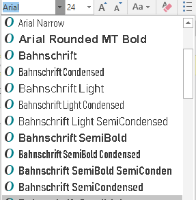
Font selection dropdown, each font name shown in its font face.
User Need - Font:
Users can change the font face (also called font family or typeface) of all text, choosing from a wide range of fonts including sans serif and serif fonts.
Some people need to increase the size of all interface elements in order to perceive information. Although increasing size is most common, some people with tunnel vision and good visual acuity may prefer to decrease the size so they can see more information at a time. For example, users need to:
Zoom to make everything larger.
Increase the width of the text cursor, which is usually done at the operating system level.
Increase the size of the mouse pointer, which is usually done at the operating system level.
Spacing such as space between lines and space between words impacts readability.
This section includes line spacing, letter spacing, word spacing, justification, margins and borders, and spacing between elements.
Line Spacing
The space between linesof text is also called leading. Some people need more space between lines to be able to read text. Line spacing also helps with tracking.
User Need - Line Spacing:
Users can change the line spacing (leading) for blocks of text.
Justification or alignment options usually include: left, right, full/both, centered.
Justification impacts readability and tracking. Sometimes full justification makes reading more difficult because extra space between words causes “@@Rivers of white” making it difficult to track along a line of text, or less space between words makes it difficult to distinguish separate words. Some people find it easier to track from the end of one line to the next with full justification, and others prefer left justification (for left-to-right scripts). @@[Draft Note: The Task Force plans to add a glossary definition for “river” or “river of white”. For now, here's an explanation and example: River (typography).]
User Need - Justification:
Users can change the justification / alignment (left, right, full/both, centered) of blocks of text.
If text is close to edges, it is hard for some people to distinguish letters and it negatively impacts readability. Having wide margins around blocks of text helps some people focus on the text and not get distracted by surround text, images, etc. This is especially important for tracking when blocks of text are in columns or near other text.
For people who need very large text, wide margins could make line length too short. For people with tunnel vision, wide margins could make it hard to track text. Therefore, some people might need borders to separate blocks of text instead of, or in addition to, margins.
User Need - Margins and Borders:
Users can change the margins (blank space) and borders (including color, width, style) around blocks of text.
Having additional space between unrelated elements helps people group related information. For example, having more space above a heading and less space below it, helps associate the heading with the text below.
[Draft Note: Possible figures to be added: examples equal space before & after headings vs. more space above a heading and less space below it.]
User Need - Spacing Between Elements:
Spacing groups related elements and separates less related elements.
Identifying elements is about reading and distinguishing elements, such as headings, lists, links, <strong>, <em>, <cite>, etc.
Element-level Customization
The Task Force is actively working on issues around element-level customization.
Some people change the way certain elements are displayed to make it easier to read and to distinguish types of text, such as headings, lists, links, <strong>, <em>, <cite>, etc.
Headings: If all text is increased proportionally, headings can become very large and bigger than people need to read the main body text. Some people prefer for headings to be smaller, and they use settings such as font, color, and indentation to distinguish heading levels.
Style: As stated in 3.3.3 Style, for some people it is difficult to read text that is all italicized or underlined, and for some bold text is easier to read. In addition to overall changes, some people need to make element-level changes. For example, a person might set all text to bold, and then for text that is marked up to be bold they use different settings such as font or color to distinguish it.
For customization to work, content needs to be marked up appropriately based on semantic structure.
The Task Force may provide additional image descriptions in this section - including a bulleted list of the user customization in the figures.
The images below show example web content dispayed with real user style sheets using element-level customization.
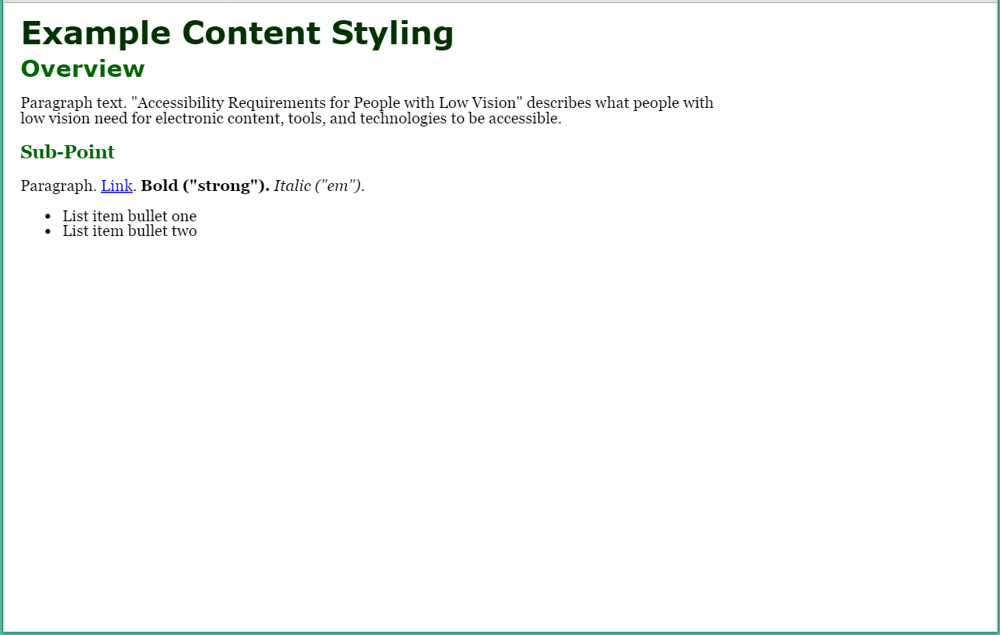
Web page with author style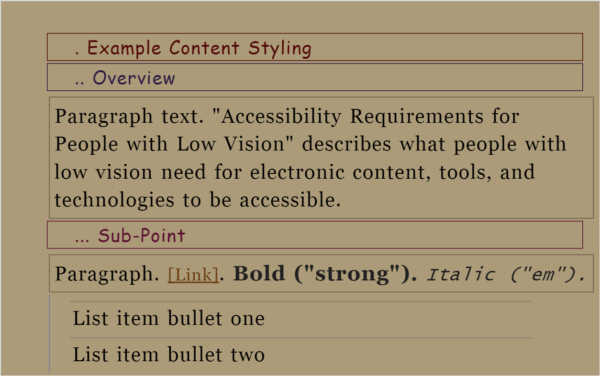
Web page with user styles - with different fonts, indentation, borders, different colors, and dots preceding text to differentiate heading levels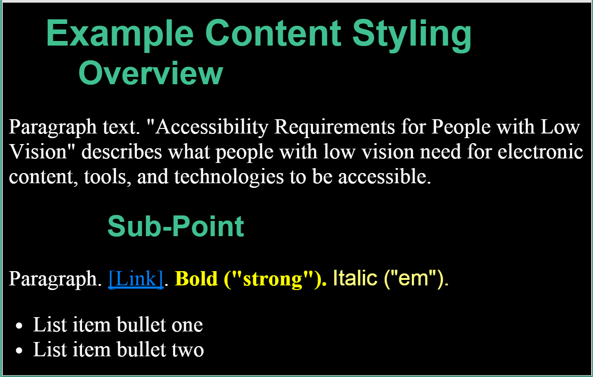
Web page with user styles - with different fonts, indentation, and colors to differentiate heading levels
User Need - Element-level Customization:
Users can customize text differently for specific elements, such as headings, lists, paragraphs, links, <strong>, <em>, <cite>, etc.
Users can set at least:
Text size
Text color and background color
Font
Text style (that is, turn on or off underline, italic, bold)
Line spacing
Margins
Borders — including border line color, width, style
The point of regard is the area that the user is viewing. @@this need clean up. [Draft Note: More info is available in: UAAG 2 Glossary and IndieUI wiki. The Task Force will probably add a glossary definition to this document.] Proximity is the space between items. In user interface generally, proximity is about using space to group related content and separate unrelated content.
As discussed in the Field of Vision section, some people with low vision see only a small amount of content and/or the user interface at a time.
The Task Force plans to add additional information in this section related to point of regard and proximity.
Maintain Point of Regard
Sometimes people will be viewing content and need to change the display to read it better, for example, make the text larger. If the place where they are reading (called “point of regard”) changes much, they lose their place and, especially with a small visible area and large text, it can be very difficult to find their place again.
Example issues:
Mouse hover changes point of regard, but is lost. Screen magnification user hovers over image, acronym, or another thing with a pop-up. The pop-up is larger than their view. When the user scrolls to read it, it loses focus and disappears.
User Need - Point of Regard:
The point of regard remains visible within the viewport when the viewport is resized, when content is zoomed or scaled, or when content formatting is changed.
People with limited field of vision or who use large text have little in their field of view at one time. If related information is not close together, they can have trouble knowing about it, seeing it, and using it. In most cases, it is best if:
Related information — such as labels and controls, instructions for data fields, matching tests in two columns, and feedback — is in close proximity.
Feedback is in close proximity to the user’s visual focus.
Dialog boxes and other such pop-up messages appear over the users' point of regard.
Users are informed of new information that may be outside of their view — such as a new browser tab opening in the background.
User Need - Related Information:
Users know about and can find related information.
When people increase text size, increase line spacing, or change other text display aspects through text-only zoom or other text settings, content that is poorly designed can become unusable. For example, with text areas in web pages, sometimes columns and sections overlap, the space between lines disappears, lines of text become too long, or text disappears.
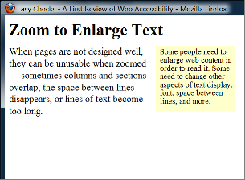 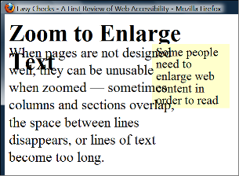
Example showing that when text size is increased, the heading overlaps the main text, the main text overlaps the sidebar text, and the sidebar text is cut off at the bottom.
Often it is best for text areas to automatically resize to fit the text, and for users to be able to change the size of text areas. When the areas cannot be resized to accommodate all content, usually a scrollbar should be available. See also the Reflow for one direction scrolling section.
When people use large fonts or lower screen resolution, it is not uncommon for dialog boxes to include information that is not in the viewport. In such cases, it is usually best practice for scrollbars to be provided for the dialog box.
[Draft Note: Possible figure to be added: example dialog box cut off]
Scrollbars generally provide the additional benefit of communicating where the user is in an interface.
Some users increase the size of mouse pointers in their operating system or with screen magnification software. These should not obscure tooltip text.
[Draft Note: Possible figure to be added: hover hand obscures important tooltip text]
User Need - All Elements:
Users can see all interface elements that are intended for users to see, including when users have changed display settings such as text size.
It is difficult for some people to read text on the computer; they need to be able to print electronic text on paper in order to read it. For example:
It is uncomfortable or painful for some people to be in the physical position required for reading on a computer monitor, for example, some people with low vision need to be an inch away from the display. While some people have mobile devices, others have only a monitor that is difficult to move, or use a public terminal.
Some people print so they can block out surrounding text; for example, they slide a sheet of paper down as they read to cover up the line below where they are reading. Some people need colored overlays.
Sometimes people need to print text to use it away from the computer, for example, presentation notes, recipes, and repair instructions.
User Need - Printing:
Users can print content after customizing how the text is displayed.
@@Removed Glossary - only had 1 item, blocks of text. now defined in text.
Image Descriptions
@@add these or not?
Acknowledgments
Low Vision Task Force
Document development:
Task Force Facilitators: Jim Allan, Andrew Kirkpatrick
W3C Staff Contacts: Michael Cooper, Shawn Lawton Henry
Editor: Shawn Lawton Henry
Content drafters: Jim Allan, Laura Carlson, Wayne Dick, Shawn Lawton Henry, Andrew Kirkpatrick
Code editors: Michael Cooper, Andrew Kirkpatrick
Task Force contributors:
Jim Allan
Jonathan Avila (SSB BART Group)
Bruce Bailey
Laura Carlson
Srinivasu Chakravarthula (Deque Systems, Inc.)
Wayne Dick (Knowbility, Inc)
Katie Haritos-Shea (Knowbility, Inc)
Shawn Lawton Henry
Andrew Kirkpatrick (Adobe Systems Inc.)
Erich Manser (IBM Corporation)
John Rochford
Alan Smith
Jeanne Spellman
Enabling Funders
This publication has been funded in part with Federal funds from the U.S. Department of Health and Human Services, National Institute on Disability Independent Living and Rehabilitation Research (NIDILRR) under contract HHSP23301500054. The content of this publication does not necessarily reflect the views or official policies of the U.S. Department of Health and Human Services, nor does mention of trade names, commercial products, or organizations imply endorsement by the U.S. Government.